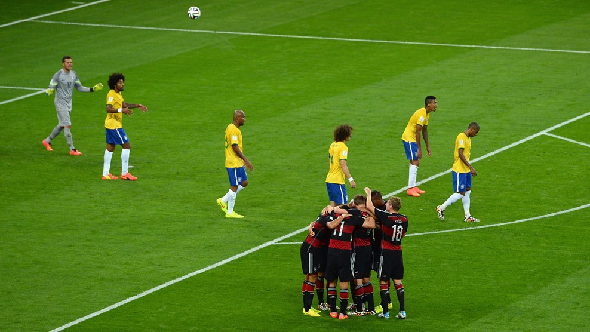

La Copa Mundial de la FIFA Brasil 2014 (en portugués: Copa do Mundo FIFA de 2014) fue la vigésima edición de la Copa Mundial de Fútbol. Se realizó en Brasil entre el 12 de junio y el 13 de julio de 2014, por segunda vez en dicho país, tras el campeonato de 1950. Brasil realizó una millonaria inversión para renovar su infraestructura deportiva y de transportes para organizar el torneo. En total se designaron doce estadios para ser sedes de los partidos. Sin embargo, el alto coste de las obras y sus retrasos motivaron una serie de protestas por parte de la población brasileña, antes y durante la Copa Mundial.La derrota por 1:7 de Brasil y su consecuente eliminación del torneo generó una ola de indignación en el país, pues fue la mayor derrota en la historia de dicha selección. Argentina y Alemania se habían enfretado previamente en dos finales: México 1986 e Italia 1990, con una victoria para cada equipo. El partido comenzó bastante parejo, con llegadas de ambos equipos. Gonzalo Higuaín desperdició un tiro estando solo frente al arquero Manuel Neuer a los 21', marcando el dominio albiceleste durante la primera etapa del partido. En el segundo tiempo, Argentina movió sus piezas con la entrada de Sergio Agüero en reemplazo de Ezequiel Lavezzi y logró tener mayor presencia en el ataque. A los 10' se produjo una acción controversial en el área penal alemana, en la que el árbitro decidió cobrar falta del delantero argentino Higuaín al guardameta Neuer, que fue reclamada en sentido contrario, alegando que debió haberse sancionado penal a favor del equipo argentino, dado lo temerario de la acción.Tras el fin del tiempo regular, el partido inició el tiempo suplementario. Rodrigo Palacio, en los primeros minutos de la prórroga, perdió una excelente oportunidad. Tras ese tiro, Alemania comenzó a ganar más posesión del balón, mientras Argentina retrocedió. Cuando ya parecía inminente recurrir a los tiros desde el punto penal para definir al campeón, Mario Götze recibió un pase de Schürrle y definió con gran precisión, marcando a los 113' el gol de la victoria alemana. Pocos minutos después, el árbitro Rizzoli decretó el fin del encuentro que coronó a Alemania como campeón por cuarta vez, siendo además el primer campeón europeo en territorio americano, en la historia del torneo mundial.
